무선설비기사 (2018-04-28 기출문제)
1과목: 디지털 전자회로
1. 다음 그림과 같은 평활회로에서 출력 맥동률을 최소화하기 위한 방법으로 틀린 것은?
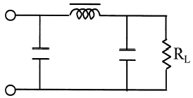
- 정류파형의 주파수를 높인다.
- L값을 크게 한다.
- C값을 크게 한다.
- RL값을 작게 한다.
(정답률: 78%)

2. 다음 그림과 같은 회로의 입력에 120[Vrms], 60[Hz] 정현파 신호가 인가되었을 경우, 부하에 걸리는 직류전압은 약 얼마인가? (단, 다이오드에 걸리는 전압강하는 무시한다.)
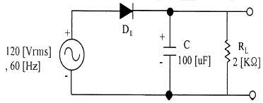
- 169.9[V]
- 167.9[V]
- 164.9[V]
- 162.9[V]
(정답률: 46%)
3. 연산증폭기를 이용한 능동 여파기에서 차단주파수는 출력전압이 최대값의 약 몇 [%]로 감소하는 주파수인가?
- 10[%]
- 50[%]
- 70[%]
- 90[%]
(정답률: 62%)
4. 다음 중 OP-AMP 성능을 판단하는 파라미터로 관련이 없는 것은?
- Vio(입력 오프셋 전압)
- CMRR(동상 신호 제거비)
- IB(입력 바이어스전류)
- PIV(최대 역 전압)
(정답률: 79%)
5. 다음 회로에서 VGS가 -1.4[V], VDS가 4.5[V], IDS가 10[mA]일 때 RD와 RS의 값은?
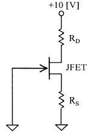
- RD=410[Ω], RS=240[Ω]
- RD=410[Ω], RS=140[Ω]
- RD=310[Ω], RS=140[Ω]
- RD=310[Ω], RS=240[Ω]
(정답률: 68%)
6. 그림과 같은 부궤환 증폭기 회로의 폐루프(Closed-Loop) 이득은? (단, 증폭기의 증폭도는 무한대(∞) 이다.)
- 10
- 5
- 3
- 1
(정답률: 72%)
7. 다음 회로는 빈-브릿지(Wien-Bridge) 발진회로이다. R1, R2 값이 감소할 경우 발진주파수의 변화는?
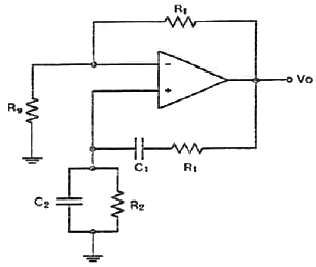
- 증가한다.
- 감소한다.
- 변화없다.
- 발진이 되지 않는다.
(정답률: 81%)
8. 다음 중 LC발진회로에서 발진주파수의 변동요인과 대책이 틀린 것은?
- 전원전압의 변동 : 직류안정화 바이어스 회로를 사용
- 부하의 변동 : Q가 낮은 수정편을 사용
- 온도의 변화 : 항온조를 사용
- 습도에 의한 영향 : 회로의 방습 조치
(정답률: 81%)
9. 9,600[bps]의 비트열을 16진 PSK로 변조하여 전송하면 변조속도는?
- 1,200[Baud]
- 2,400[Baud]
- 3,200[Baud]
- 4,600[Baud]
(정답률: 85%)
10. 다음 중 단측파대 변조 방식의 특징으로 틀린것은?
- 점유주파수 대역폭이 매우 작다.
- 변복조기 사이에 반송파의 동기가 필요하다.
- 송신출력이 비교적 작게 된다.
- 전송 도중에 복조되는 경우가 있다.
(정답률: 77%)
11. 다음 중 AM방식의 변조도에 대한 설명으로 틀린것은?
- 변조도가 1일 때 완전변조라 한다.
- 변조도가 1보다 작으면 파형의 일부가 잘려 일그러짐이 생긴다.
- 변조도는 신호파의 진폭과 반송파의 진폭의 비로 나타낸다.
- 변조도가 1보다 큰 경우를 과변조라 한다.
(정답률: 80%)
12. 다음 중 정보 전송 기술에서 디지털 신호 재생 중계기의 기능에 해당되지 않는 것은?
- 타이밍
- 에러 정정
- 파형 등화
- 식별 재생
(정답률: 75%)
13. 다음 중 슈미트 트리거 회로에 대한 설명으로 틀린 것은?
- 입력이 어느 레벨이 되면 비약하여 방형 파형을 발생시킨다.
- 입력 전압의 크기가 on, off 상태를 결정한다.
- 펄스 파형을 만드는 회로로 사용한다.
- 증폭기에 궤환을 걸어 입력신호의 진폭에 따른 1개의 안정 상태를 갖는 회로이다.
(정답률: 76%)
14. 다음 중 저역 통과 RC회로에서 시정수가 의미하는 것은?
- 응답의 위치를 결정해준다.
- 입력의 주기를 결정해준다.
- 입력의 진폭 크기를 표시한다.
- 응답의 상승속도를 표시한다.
(정답률: 74%)
15. J-K 플립플롭에서 Jn=0, Kn=1일 때 클럭 펄스가 1이면 Qn+1의 출력 상태는?
- 반전
- 1
- 0
- 부정
(정답률: 68%)
16. 다음 그림과 같은 논리회로 출력값과 기능으로 옳은 것은?
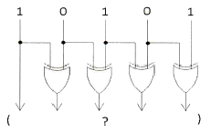
- 11011, 패리티 점검
- 11000, 양수, 음수 점검
- 11111, 코드 변환
- 10000, 패리티 변환
(정답률: 80%)
17. 다음 그림에서 입력 신호 X와 Y가 어떤 조건을 갖출 때 출력 신호의 값이 1이 되는가?
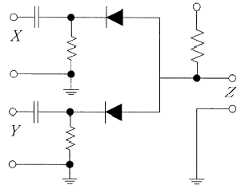
- X=0, Y=0
- X=1, Y=0
- X=0, Y=1
- X=1, Y=1
(정답률: 74%)
18. 다음은 어떤 논리 회로인가?
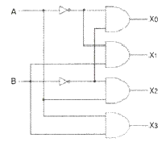
- 인코더
- 디코더
- RS 플립플롭
- JK 플립플롭
(정답률: 77%)
19. 다음 중 시프트 레지스터 출력을 입력에 되먹임 시킴으로써 클럭 펄스가 가해지면, 같은 2진수가 레지스터 내부에서 순환하도록 만든 카운터는?
- 링 카운터
- 2진 리플 카운터
- 필드코드 카운터
- BCD 카운터
(정답률: 77%)
20. 다음 중 동기식 카운터에 대한 설명으로 옳은 것은?
- 플립플록의 단수는 동작 속도와 무관하다.
- 논리식이 단순하고 설계가 쉽다.
- 전단의 출력이 다음 단의 트리거 입력이 된다.
- 동영상 회로에 많이 사용된다.
(정답률: 65%)
2과목: 무선통신 기기
21. 수신기의 충실도(Fidelity)를 높이기 위해 부궤환을 실시하는 것은 어떤 일그러짐을 개선하기 위한 것인가?
- 비직선 일그러짐
- 주파수 일그러짐
- 위상 일그러짐
- 검파 일그러짐
(정답률: 61%)
22. 전송할 신호의 주파수에 비해 높은 주파수의 반송파를 이용하여 0과 1을 진폭, 주파수 및 위상에 대응하여 전송하는 방식은?
- 문자 동기 전송 방식
- 대역 전송 방식
- 차분 방식
- 다이코드 방식
(정답률: 84%)
23. SSB(Single Side Band) 통신에서 자국 송신기와 상대국 수신기의 반송주파수를 일치(동기)하도록 해야 하는데 이러한 동기를 미세하게 조정하는 것을 무엇이라 하는가?
- 자동 선택도 조정회로(ASC : Automatic Selectivity Control Circuit)
- 자동이득 조절회로(AGC : Automatic Gain Control Circuit)
- 비트 주파수 발진기(Beat Frequency Oscillator)
- 스피치 크라리파이어(Speech Clarifier)
(정답률: 64%)
24. 다음 중 QAM(Quadrature Amplitude Modulation)의 신호 및 성능에 대한 설명으로 부적합한 것은?
- 16QAM의 경우 4개의 비트단위로 반송파의 진폭에 2비트, 위상에 2비트의 정보를 실어 보낸다.
- QAM은 반송파의 진폭과 위상에 정보가 담겨있으므로 채널의 진폭 왜곡과 위상 왜곡에 민감하다.
- 평균 송신 전력을 동일하게 한 상태에서는 M-QAM(M-ary Quadrature Amplitude Modulation) 신호점 사이의 거리가 M-PSK(M-ary Phase Shift Keying) 신호점 간의 거리에 비해 커서 비트오율 성능이 M-PSK보다 우수하므로, M이 16 이상에서 QAM이 선호된다.
- 동일 평균 송신 전력이라면 64QAM이 16QAM보다 위상도 상에서 신호점간의 거리가 더 멀다.
(정답률: 75%)
25. 동일한 조건에서 주파수 대역폭의 사용량을 비교했을 때, OFDMA(Orthogonal Frequency Division Multiplexing Access) 방식은 FDMA(Frequency Division Multiplexing Access) 방식에 비하여 약 몇 배 정도의 효율이 있는가?
- 1배
- 2배
- 4배
- 8배
(정답률: 73%)
26. 슈퍼헤테로다인 수신기의 특징으로 옳은 것은?
- 수신기의 이득이 낮다.
- 회로가 간단하고 조정이 쉽다.
- 국부 발진기의 안정도가 저주파에서 저하된다.
- 영상신호의 방해를 받을 수 있다.
(정답률: 79%)
27. 다음 중 BPSK(Binary Phase Shift Keying)와 DPSK(Differential Phase Shift Keying)의 성능에 대한 설명으로 틀린 것은?
- BPSK는 동기식 ASK(Amplitude Shift Keying)나 동기식 FSK(Frequency Shift Keying)보다 약 3[dB] 성능이 우수하다.
- 비동기식 DPSK는 BPSK 보다 1[dB] 정도 성능이 떨어진다.
- 비동기식 DPSK는 비동기식 ASK, 비동기식 FSK과 성능이 유사하다.
- DPSK는 BPSK에 비해 회로가 간단하지만, 비트 오류가 다음 비트에도 영향을 미치는 단점이 있다.
(정답률: 67%)
28. 주파수 대역폭이 가장 좁은 통신방식은?
- FS 전신
- SSB 전화
- FM 전화
- TV
(정답률: 72%)
29. 다음 중 무선방위 측정에서 전파전파(電波傳播)에 따른 오차에 해당하지 않는 것은?
- 야간오차
- 해안선오차
- 대륙현상
- 산란현상
(정답률: 68%)
30. 상업용 FM 방송에서는 기저대역 신호의 대역을 15[kHz]~30[kHz]로 하고, 최대 주파수 편이를 Δf=75[kHz]로 제한하고 있다. 전송대역폭을 각 채널당 200[kHz]로 할당하는 경우 FM 방송에서의 신호 대역폭을 얼마인가?
- 150[kHz]
- 160[kHz]
- 180[kHz]
- 200[kHz]
(정답률: 77%)
31. 다음 중 UPS(Uninterruptible Power Supply)의 구성에 대한 설명으로 틀린 것은?
- 입력 필터부 : 고조파 성분을 없애는 장치
- 정류부 : 교류전원을 직류전원으로 변환하는 장치
- Static 스위치부 : 장비에 문제가 발생 되었을 때 출력측으로 전원이 공급되지 않을시 출력측으로 전원을 공급할 수 있는 비상 전원 공급용 스위치부
- 축전지 : 전원을 충전하는 장치
(정답률: 82%)
32. 다음 중 정류회로의 특성을 나타내는 주요 요소가 아닌 것은?
- 맥동률(리플 함유율)
- 정류 효율
- 전압 변동률
- 최대 전압
(정답률: 73%)
33. 다음 중 전압형 인버터 시스템의 구성에 대한 설명으로 틀린 것은?
- SCR 대신 3상 다이오드 모듈을 사용하여 교류전압을 직류로 정류시킨다.
- DC-Link 내의 직류전압을 평활용 콘덴서를 이용하여 평활시킨다.
- 정류된 직류전압을 PWM(Pulse Width Modulation) 제어방식을 이용하여 인버터부에서 전압과 주파수를 동시에 제어한다.
- 출력전압파형은 정현파 특성을 얻도록 한다.
(정답률: 68%)
34. 다음 중 충전시 주의사항으로 틀린 것은?
- 충전은 규정 전류(또는 전압)로 규정시간에 할 것
- 너무 과도한 충전이나 불충분한 충전을 하지 말 것
- 충전으로 온도가 조금씩 상승하므로 40[℃]~60[℃] 이내로 유지할 것
- 충전에 의해 확산한 회유산의 분말을 제거할 것
(정답률: 81%)
35. 반사계수가 0.2 일 때 정재파비는 얼마인가?
- 1.0
- 1.5
- 2.0
- 2.5
(정답률: 78%)
36. 부하시 직류 출력전압이 100[V], 무부하시 직류 출력전압이 120[V]일 때 전압 변동률은 몇[%]인가?
- 5[%]
- 10[%]
- 15[%]
- 20[%]
(정답률: 84%)
37. 전원회로의 부하에 병렬로 블리더(Bleeder) 저항을 사용하면 전원 특성은 어떻게 되는가?
- 전압변동률이 개선된다.
- 리플함유율이 개선된다.
- 정류효율이 저하된다.
- 최대역전압이 증가한다.
(정답률: 73%)
38. 다음 중 FM송신기의 주파수 특성 측정에 사용되지 않는 것은?
- 공동 주파수계
- 감쇠기(ATT)
- 저역여파기(LPF)
- 저주파 발진기
(정답률: 65%)
39. 다음 중 평활회로에 대한 설명으로 틀린 것은?
- 쵸크 입력형 평활회로의 경우 부하전류가 작을수록 맥동률이 크다.
- 콘덴서 입력형 평활회로의 경우 콘덴서 용량이 작을수록 맥동률이 작다.
- 쵸크 입력형 평활회로의 경우 단상반파 및 배전압 정류회로에 주로 적용된다.
- 콘덴서 입력형 평활회로의 경우 부하전류의 최대치와 평균치와의 차가 크다.
(정답률: 77%)
40. 다음 중 필터법을 이용한 송신기의 왜율 측정에 필요하지 않는 것은?
- LPF(Low Pass Filter)
- BPF(Band Pass Filter)
- HPF(High Pass Filter)
- 감쇠기
(정답률: 79%)
3과목: 안테나 공학
41. 다음 중 전파의 성질에 관한 설명으로 틀린것은?
- 전파는 횡파이다.
- 균일한 매질 중에 전파하는 전파는 직진한다.
- 반사와 굴절 작용이 있다.
- 주파수가 높을수록 회절 작용이 심하다.
(정답률: 85%)
42. 다음 중 포인팅 벡터의 크기를 나타내는 것은? (단, E : 전계의 세기, H : 자계의 세기, μ : 투자율, ε : 유전율)
- EH
- με
- H/E
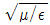
(정답률: 88%)
43. 비유전율(εs)이 1이고 비투자율(μs)이 9인 매질 내를 전파하는 전자파의 속도는 자유공간을 전파할 때와 비교해서 몇 배의 속도가 되는가?
- 2배
- 1/2배
- 3배
- 1/3배
(정답률: 87%)
44. 다음 중 구형 도파관에 대한 설명으로 틀린것은?
- TE10 모드인 경우 차단파장(λc)는 4a(a는 장변의 길이)이다.
- 전계는 Y방향 성분만 존재한다.
- 자계는 XZ방향 성분만 존재한다.
- 구형 도파관의 기본 모드는 TE10 모드이다.
(정답률: 82%)
45. 다음 중 동축급전선에 대한 설명으로 잘못된것은? (단, f는 주파수 이다.)
- 전송손실은 f2에 비례하여 커진다.
- 전송손실이 최소로 되는 내경과 외경의 비(D/d)가 존재한다.
- 내부도체 직경과 외부도체 직경의 비(D/d)가 같으면 특성 임피던스는 내경과 외경에 의해 결정된다.
- 특성 임피던스가 같은 경우에 케이블이 굵으면 손실이 적다.
(정답률: 75%)
46. 다음 중 전압정재파비(VSWR)와 반사계수에 대한 설명으로 옳은 것은?
- 임피던스 정합의 정도를 알 수 있다.
- 동조급전방식에서 동조점을 찾는데 꼭 필요하다.
- 반사계수는 ∞에 가까울수록 양호한 것이다.
- 전압정재파비가 1에 가까울수록 반사손실이 크다.
(정답률: 74%)
47. 다음 중 도파관창의 용도로 틀린 것은?
- 도파관의 여진용으로는 동축케이블을 사용한다.
- 공동 공진기에서 입력을 얻는데 사용한다.
- 도파관용 필터로 사용한다.
- 임피던스 정합용 소자로서 사용한다.
(정답률: 54%)
48. 다음 중 분포 정수형 Balun의 종류가 아닌 것은?
- 스페르토프(Sperrtopf) Balun
- 분기 도체에 의한 Balun
- U자형 Balun
- Taper에 의한 Balun
(정답률: 78%)
49. 다음 중 절대이득과 상대이득, 지상이득과의 관계를 옳게 표현한 것은?
- 절대이득 = 상대이득 × 1.64
- 절대이득 = 상대이득 × 2.56
- 절대이득 = 지상이득 × 3.68
- 절대이득 = 지상이득 × 5.15
(정답률: 84%)
50. 다음 중 다중 접지 방식에 대한 설명으로 틀린것은?
- 한 점의 접지만으로는 불충분한 경우, 여러 점을 직렬로 접속하여 접지 저항을 줄이는 방식이다.
- 안테나 전류가 기저부 부근에 밀집하는 것을 피하고 접지저항을 감소시키기 위해 사용한다.
- 접지 저항은 1~2[Ω] 정도이다.
- 대전력 방송국의 안테나 접지에 사용한다.
(정답률: 82%)
51. 다음 중 절대이득의 기준 안테나는?
- 무손실 접지 안테나
- 무손실 루프 안테나
- 무손실 등방성 안테나
- 무손실 다이폴 안테나
(정답률: 85%)
52. 다음 중 방사상 접지의 접지저항과 용도로 각각 옳은 것은?
- 약 1~2[Ω] 정도, 단파 방송용
- 약 5[Ω] 정도, 중전력국용
- 약 10[Ω] 정도, 소전력용
- 약 20[Ω] 정도, 대전력용
(정답률: 80%)
53. 다음 중 수직안테나의 정부에 역 L형 안테나와 같이 수평도선을 설치하거나 정관안테나와 같이 용량환을 설치하는 경우에 틀린 것은?
- 안테나 수직부의 전류분포를 증대하고 실효고를 높이는 역할을 한다.
- 방사저항의 감소로 효율이 증가한다.
- 고유주파수가 저하된다.
- 비교적 낮은 안테나로 고각도 방사를 억제하며 수평이득이 크다.
(정답률: 42%)
54. 1/4파장 수직접지 안테나에 있어서 실제 안테나 길이가 13[m]일 경우 이 안테나의 실효 높이는 약 얼마인가?
- 10.3[m]
- 9.3[m]
- 8.3[m]
- 7.3[m]
(정답률: 67%)
55. 잡음온도가 160[K]인 안테나에 급전회로를 연결할 때, 200[K]의 잡음온도가 측정되었다. 이 급전회로의 손실 값은 얼마인가? (단, 대역폭과 저항은 일정하다)
- 0.9
- 1.1
- 1.3
- 1.5
(정답률: 46%)
56. 무선통신 시스템에서 공전으로 인한 잡음을 경감시키기 위한 대책으로 틀린 것은?
- 지향성이 예민한 안테나를 사용한다.
- 다이버시티 수신기법을 이용한다.
- 수신기의 선택도를 높이도록 한다.
- 진폭제한회로가 부가된 수신기를 설치한다.
(정답률: 60%)
57. 무선설비, 전기·전자기기 등에서 발생하는 전자파가 인체에 미치는 영향을 고려하여 고시되는 사항 중 가장 우선순위가 되는 것은?
- 전자파 등급기준
- 전자파 인체보호기준
- 전자파 강도 측정기준
- 전자파 흡수율 측정기준
(정답률: 80%)
58. 페이딩을 방지하기 위해 둘 이상의 수신 안테나를 서로 다른 장소에 설치하여 두 수신 안테나의 출력을 합성하거나 양호한 출력을 선택하여 수신하는 방법이 사용되는 페이딩은?
- 간섭성 페이딩
- 편파성 페이딩
- 흡수성 페이딩
- 선택성 페이딩
(정답률: 73%)
59. 다음 줄 회절파에 대한 설명으로 틀린 것은?
- 산악회절파는 페이딩이 적다.
- 산압회절파는 지리적 제한을 받는다.
- 송·수신점의 정중앙에 산악이 있을 때에 산악회절 이득이 최대가 된다.
- 회절계수가 커지면 회절손실도 크게 된다.
(정답률: 69%)
60. 다음 중 라디오 덕트를 발생시키는 원인으로 볼 수 없는 것은?
- 육상의 건조한 공기가 해상으로 흘러 들어갈 때
- 야간에 지표면 쪽의 공기가 상층부의 공기보다 빨리 냉각될 때
- 고기압권에서 발생한 하강기류가 해면으로 내려올 때
- 온난기단이 한랭기단 아래쪽으로 끼어 들어갈 때
(정답률: 80%)
4과목: 무선통신 시스템
61. 장파대용 무선 시스템에서 지표파의 전계 강도가 가장 큰 곳은?
- 평야
- 산악
- 시가지
- 해상
(정답률: 83%)
62. 무선통신시스템에서 PLL(Phase Lock Loop) 없이는 구현이 불가할 만큼 많이 사용되고 있는데 Digital PLL의 구성 요소가 아닌 것은?
- TDC(Time Digital Convertor)
- DCO(Digital Controlled Osc)
- Digital Filter
- Charge Pump
(정답률: 81%)
63. 30개의 구간을 망형으로 연결하기 위해 필요한 회선 수는 몇 개인가?
- 435개
- 400개
- 380개
- 200개
(정답률: 84%)
64. 64진 QAM(Quadrature Amplitude Modulation)의 대역폭 효율은 얼마인가?
- 2[bps/Hz]
- 4[bps/Hz]
- 6[bps/Hz]
- 8[bps/Hz]
(정답률: 81%)
65. 다음 중 밀리미터파(mm Wave)에 대한 설명으로 틀린 것은?(오류 신고가 접수된 문제입니다. 반드시 정답과 해설을 확인하시기 바랍니다.)
- 광대역 초고속 정보전송이 가능하다.
- 지향성이 예민해 장거리 통신에 적합하다.
- 30[GHz]~300[GHz]의 주파수 대역을 사용한다.
- 주파수 재이용의 효율성과 통신 보안성이 높다.
(정답률: 57%)
66. M/W 통신에서 송신출력이 1[W], 송수신 안테나 이득이 각각 30[dBi], 수신 입력 레벨이 -30[dBm]일 때 자유공간 손실은 몇 [dB]인가? (단, 전송선로 손실 및 기타손실은 무시한다.)
- 112[dB]
- 117[dB]
- 120[dB]
- 123[dB]
(정답률: 77%)
67. 다음 중 멀티빔(Multi Beam) 위성 통신 방식에 대한 설명으로 틀린 것은?
- 전송용량을 증대시킬 수 있다.
- Single Beam 방식에 비해 위성 안테나의 제어가 쉽다.
- 주파수를 유효하게 이용할 수 있다.
- 지구국 수신 안테나를 소형으로 할 수 있다.
(정답률: 70%)
68. 지상파 UHD(Ultra High Definition) TV(4K)는 지상파 HD(High Definition) TV(Full HD)보다 몇 배의 해상도인가?
- 2배
- 4배
- 8배
- 16배
(정답률: 85%)
69. 다음 중 CDMA(Code Division Multiplexing Access) 시스템 용량에 대한 설명으로 틀린 것은?
- 동시 사용자수는 시스템 처리 이득에 비례한다.
- 적절한 품질을 유지하기 위한 통신로의 Eb/No가 증가할수록 시스템 용량은 증가한다.
- 인접 셀의 사용자의 부하를 줄일수록 시스템 용량은 증가한다.
- 음성활성화 계수가 작을수록 시스템 용량은 증가한다.
(정답률: 74%)
70. 다음 중 이동통신시스템 기지국의 VLR(Visitor Location Register)기능으로 틀린 것은?
- 가입자 번호 및 식별자 관리
- 호처리 기능(루팅 정보 제공)
- 위치 등록 및 삭제(Registration Notification/Cancellation)
- 신호음 및 Ring 기능
(정답률: 75%)
71. 다음 중 국내에서 UWB(Ultra Wide Band) 용도로 사용할 수 없는 주파수는?
- 4.1[GHz]
- 6.1[GHz]
- 8.1[GHz]
- 10.1[GHz]
(정답률: 59%)
72. 데이터 통신 시스템의 HDLC(High-Level Data Link Control) 프로토콜에 대한 설명으로 틀린것은?
- 에러제어방식은 연속적 ARQ(Automatic Request for repetition) 방식을 사용한다.
- 모든 정보에 대하여 오류검출을 수행하므로 신뢰성을 높일 수 있다.
- 전송제어상의 제한을 받지 않고 자유로이 비트정보를 전송할 수 있다.
- 포인트-투-포인트 방식이며 멀티포인트 방식에만 적용할 수 있다.
(정답률: 67%)
73. 무선랜에서 사용하는 다중 접속 프로토콜로서 한 노드가 보낼 패킷이 발생하면 작은 제어 패킷을 보내 채널 상황을 체크한 후 채널이 사용 가능하면 패킷을 보내고 가능하지 않은 상황이면 임의로 정해진 시간 후 다시 체크함으로써 기기 간 전송 충돌을 회피하는 방식은 무엇인가?
- Token ring
- TDMA(Time Division Multiplexing Access)
- CSMA/CD(Carrier Sense Multiple Access/Collision Detection)
- CSMA/CA(Carrier Sense Multiple Access/Collision Avoidance)
(정답률: 78%)
74. 다음 중 무선 LAN 시스템에서 채널을 예약하고 확인하는 등의 과정을 거치기 위해서 사용하는 기법은 무엇인가?
- RTS/CTS
- FHSS
- Back-off
- DFS(Dynamic Frequency Selection)
(정답률: 83%)
75. 다음 중 오류제어, 동기제어, 흐름제어 등의 각종 제어 절차에 관한 제어 정보에 대해 정의하는 프로토콜의 기본 요소는?
- 포맷(Format)
- 구문(Syntax)
- 의미(Semantics)
- 타이밍(Timing)
(정답률: 79%)
76. 다음 중 인접 계층간 통신을 위한 인터페이스는?
- SAP(Service Access Point)
- PDU(Protocol Data Unit)
- SDU(Service Data Unit)
- PCI(Programmable Communication Interface)
(정답률: 76%)
77. 전력선 반송 및 유도식 통신설비에서 발사되는 주파수의 허용편차는?
- 1[%]
- 0.5[%]
- 0.1[%]
- 0.⑤[%]
(정답률: 62%)
78. 다음 문장의 괄호 안에 공통으로 들어갈 말은?
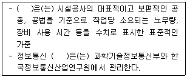
- 산재보험료
- 일반관리비
- 일위대가표
- 표준품셈
(정답률: 76%)
79. 무선통신망 유지보수 시 시행하는 점검의 종류가 아닌 것은?
- 정기점검
- 공정점검
- 수시점검
- 예방점검
(정답률: 70%)
80. 다음 중 무선통신설비의 동작계통, 시스템의 연결 및 단말기의 접속에 관련된 내용을 표시하는 설계도서는?
- 계통도
- 배관도
- 배선도
- 상세도
(정답률: 84%)
5과목: 전자계산기 일반 및 무선설비기준
81. 일정시간 모여진 변동 자료를 어느 시기에 일괄적으로 처리하는 방법은?
- 리얼 타임 프로세싱(Real Time Processing) 방식
- 배치 프로세싱(Batch Processing) 방식
- 타임 세어링 시스템(Time Sharing System) 방식
- 멀티 프로그래밍(Multi Programming) 방식
(정답률: 78%)
82. 다음은 명령어의 형식에 대한 설명이다. 괄호 안에 들어갈 용어로 옳은 것은?
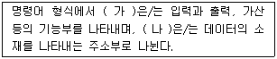
- 가 : Operation code1, 나 : Operation code2
- 가 : Operand, 나 : Operation code1
- 가 : Operation code, 나 : Operand
- 가 : Operand, 나 : Instruction Code
(정답률: 69%)
83. 다음 중 교착상태(Deadlock)의 필요조건이 아닌것은?
- 상호배제
- 점유와 대기
- 자원할당
- 비선점
(정답률: 60%)
84. 다음은 인터럽스 서비스 루틴에 해당하는 연산을 나타낸 것이다. 괄호 안에 들어갈 연산과정은?
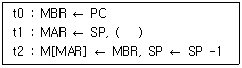
- AC ← ISR의 시작주소
- SP ← ISR의 시작주소
- PC ← ISR의 시작주소
- MBR ← ISR의 시작주소
(정답률: 71%)
85. SJF(Shortest-Job-First) 정책으로 관리하는 시스템에 프로세스 p1, p2, p3, p4, p5가 동시에 도착했다. 다음 표와 같이 프로세스가 정의되었을 때 p3의 반환시간(Turn-Around Time)은 얼마인가?
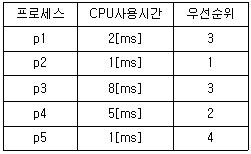
- 11[ms]
- 14[ms]
- 16[ms]
- 17[ms]
(정답률: 70%)
86. 다음 중 부동 소수점 표현의 수들 사이에서 곱셈 알고리즘 과정에 해당하지 않은 것은?
- 0(Zero)인지의 여부를 조사한다.
- 가수의 위치를 조정한다.
- 가수를 곱한다.
- 결과를 정규화 한다.
(정답률: 71%)
87. 다음 중 비동기 인터페이스(Asynchronous Interface)에 대한 설명으로 틀린 것은?
- 컴퓨터와 입출력 장치가 데이터를 주고받을 때 일정한 클록 신호의 속도에 맞추어 약정된 신호에 의해 동기를 맞추는 방식이다.
- 동기를 맞추는 약정된 신호는 시작(Start), 종료(Stop) 비트 신호이다.
- 컴퓨터 내에 있는 입출력 시스템의 전송 속도와 입출력 장치의 속도가 현저하게 다를 때 사용한다.
- 일반적으로 컴퓨터 본체와 주변 장치 간에 직렬 데이터 전송을 하기 위해 사용된다.
(정답률: 66%)
88. 인터럽트의 처리과정에서 인터럽트 처리 프로그램(Interrupt Handling Program)으로 이전하기 전에 시스템 제어 스택(System Control Stack)에 저장해야 할 정보는 무엇인가?
- 현재의 프로그램 계수기(Program Counter)의 값
- 이전에 수행하던 프로그램의 명칭
- 인터럽트를 발생시킨 장치의 명칭
- 인터럽트 처리 프로그램의 시작 주소
(정답률: 68%)
89. 다음 명령의 수행 결과값은?
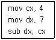
- 1.75
- 3
- 11
- 28
(정답률: 85%)
90. 다음 중 컴퓨터에서 수를 표현하는 방식이 아닌것은?
- 양자화 표현
- 1의 보수 표현
- 2의 보수 표현
- 부호와 절대치 표현
(정답률: 80%)
91. 적합성평가 대상기자재에 대하여 적합인증을 신청 시 제출할 서류가 아닌 것은?
- 기본모델의 개요, 사양, 구성, 조작방법 등이 포함된 설명서
- 외관도 및 부품의 배치도
- 기본모델의 기기의 제작공정
- 회로도
(정답률: 76%)
92. 조난통신의 조치를 방해한 자의 벌칙 중 맞는 것은?
- 1년 이상의 유기징역
- 3년 이하의 징역 또는 5천만원 이하의 벌금
- 5년 이하의 징역 또는 7천만원 이하의 벌금
- 10년 이하의 징역 또는 1억원 이하의 벌금
(정답률: 73%)
93. 송신설비의 안테나 등 고압전기를 통하는 장치는 사람이 보행하거나 기거하는 평면으로부터 몇 미터이상의 높이에 설치하여야 하는가?
- 2[m]
- 2.5[m]
- 3[m]
- 3.5[m]
(정답률: 84%)
94. R3E, H3E, J3E 전파형식을 사용하는 모든 무선국의 무선설비 점유주파수 대역폭의 허용치로 옳은 것은?
- 1[kHz]
- 3[kHz]
- 6[kHz]
- 10[kHz]
(정답률: 79%)
95. 다음 중 무선설비 기성부분검사와 준공검사에 대한 설명으로 알맞은 것은?
- 공사현장에 주요공사가 완료되고 현장이 정리단계에 있을 때에는 준공 6개월 전에 준공기한 내 준공 가능여부 및 미진사항의 사전 보완을 위해 최종 준공검사를 실시하여야 한다.
- 감리사는 시공자로부터 시험운용계획서를 제출받아 검토ㆍ확정하여 시험 운용 5일 전까지 발주자에게만 통보하여야 한다.
- 예비준공검사는 감리사가 확인한 정산설계도서 등에 의거 검사하여야 하며, 그 검사 내용은 준공검사에 준하여 철저히 시행하여야 한다.
- 감리업자 대표자는 기성부분검사원 또는 준공계를 접수하였을 때는 10일 안에 소속감리사 중 특급감리사급 이상의 자를 검사자로 임명하여, 이 사실을 즉시 본인과 발주자에게 통보하여야 한다.
(정답률: 67%)
96. 다음 중 감리원의 업무범위가 아닌 것은?
- 공사계획 및 공정표의 검토
- 공사 진척부분에 대한 조시 및 검사
- 설계변경에 관한 사항의 검토·확인
- 도급에 대한 검토·확인
(정답률: 66%)
97. 무선설비를 둘 이상의 기간통신사업자나 방송사업자가 공동으로 설치하여 사용 시 무선국 검사수수료 20퍼센트 감면대상 무선국에 해당하지않는 것은?
- 고정국
- 기지국
- 육상국
- 이동중계국
(정답률: 74%)
98. 무선국의 개설 허가 시 심사해야 할 대상이 아닌것은?
- 주파수지정이 가능한지의 여부
- 기술기준에 적합한지의 여부
- 무선종사자의 자격과 정원이 배치기준에 적합한지의 여부
- 개설목적을 달성하는데 최대한의 주파수 및 안테나공급전력을 사용하는지의 여부
(정답률: 63%)
99. 다음 문장의 괄호 안에 들어갈 내용으로 가장 적합한 것은?
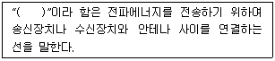
- 통신선
- 중계장치
- 회선
- 급전선
(정답률: 82%)
100. 다음 중 정보통신공사업법의 목적이 아닌 것은?
- 정보통신공사자의 교육을 도모한다.
- 정보통신공사의 적절한 시공을 도모한다.
- 정보통신공사업의 건전한 발전을 도모한다.
- 정보통신공사업의 등록에 필요한 사항을 규정한다.
(정답률: 79%)